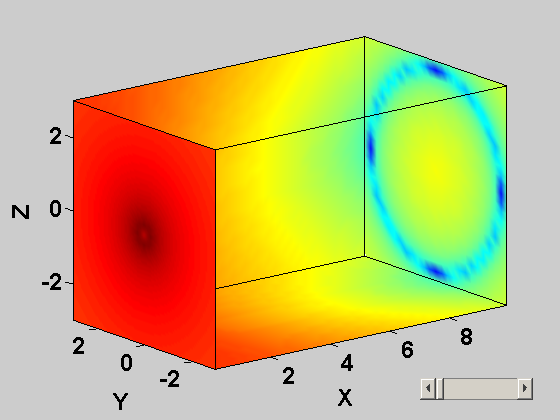
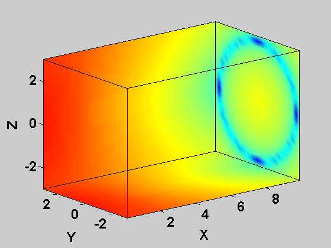
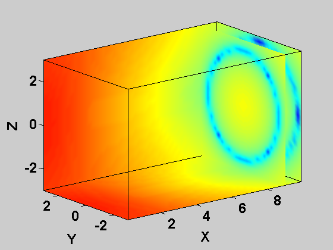
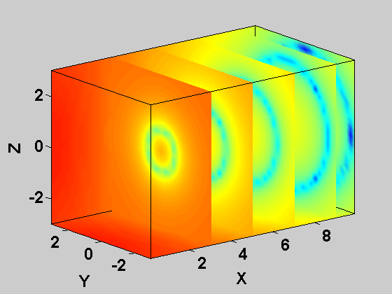

Script for Volume Visualization Example
Contents
Introduction
Now I'd like to show you one application of the technology we've discussed today. We'd like to build a simple GUI to aid with the visualization of 3D data sets. Let's take a look:
We start with some sample data that ships with MATLAB. Fluid flow speed (v) has been measured over a fully-populated 3-D grid of a prismatic space x, y, and z. We would like to be able to visualize the measurements v.
[x,y,z,v] = flow; volvisGUI(x,y,z,v)
close all;
We'll break down this work into two parts. The first thing we do is to develop the functionality that builds the background of the visualization and allows us to add and remove slice planes.
We'll look at the use of function handles and nested functions to develop a custom data visualization routine that encapsulates data and funtionality (methods).
In this example, you will see how to use function handles to export nested functions. Since nested functions can have persistent data, this gives a very nice way to store data along with functionality. You could consider this as an object-oriented-like approach to building custom functionality in MATLAB, as an alternative to traditional functional programming. You will also see how to use function handles and nested functions for GUI callbacks.
Create initial visualization
We can use the custom function we developed (volumeVisualization) to draw the bottom and back walls of the measurement space.
fh = volumeVisualization(x,y,z,v);
Setup
Edit volumeVisualization. Setup the desktop so volumeVisualization and command window are visible.
edit volumeVisualizationPseudo
Let's take a quick look at the code. We first initialize handles to the axis where we are drawing, and to a slice plane, which we'll see in a minute. Since these handles are initialized here (in the main function), they will be accessible inside of all nested functions. We then create data for a generic slice through the yz-plane. This is a grid of coordinates just like you see on the back right wall (with the blue circle). We'll move this plane back and forth along the x-axis to visualize the flow field. Again, this data will be accessible inside of all of the nested functions. Finally, we call initDisplay, which is a nested function that generates the initial display. [Show initDisplay]. After the nested functions, the last thing we do is create an output structure.
The function returns fh, which you can think of as a handle to the visualization. Let's take a look at it:
fh
fh =
addSlicePlane: @volumeVisualization/addSlicePlane
deleteLastSlicePlane: @volumeVisualization/deleteLastSlicePlane
xMin: 0.1000
xMax: 9.9000
Notice that we've done something different here. Instead of returning what you might expect - handles to the 3 surfaces that were drawn, perhaps - we've actually returned a structure. The last two fields of the structure are self-explanatory - they just capture the minimum and maximum values of the x-coordinates. Can anyone figure out what's going with the first two fields?
[Scroll in the editor so that addSlicePlane and deleteSlicePlane are visible.]
The first two fields contain handles to nested functions inside of volvis.
Draw a slice plane
We can draw a slice plane at x=9 to get a feel for the data
fh.addSlicePlane(9)
Draw more slice planes
That was so useful, let's draw more
fh.addSlicePlane(7) fh.addSlicePlane(5) fh.addSlicePlane(3)
Put them away
When we don't want a slice plane any longer, we can delete it. LIFO
fh.deleteLastSlicePlane(); fh.deleteLastSlicePlane(); fh.deleteLastSlicePlane();
How does this work?
Let's take a closer look at the code so that we can figure out what is going on. What is happening when we type fh.addSlicePlane(9)? Since this field contains a handle to the function addSlicePlane, we are actually calling the function addSlicePlane. [Show source for addSlicePlace]. addSlicePlane adds a slice plane at the specified x-coordinate. The first line sets the x-coordinate of our slice plane. While it uses the value of xLoc we passed in, it's using the value of yd that was created at the top of the main function. The next line draws the slice plane. The one after that stores a handle to the slice plane we just drew. Note that this is building a stack of handles to every slice plane. The final step just makes the slice plane look nice.
deleteSlicePlane is a bit simpler - it just deletes the newest slice plane in the stack, then updates the list of slice planes. This is a very simple way of implementing a FIFO buffer. [MIKE - CAN WE DO LIFO just as easily? THAT SEEMS TO MAKE MORE SENSE]. It's the persistence of data with nested functions that makes this whole thing work.
Summarize first part of demo
This first part of this example showed how you can take advantage of the ability of nested functions to preserve their data. This allowed us to build a custom function that encapsulated data and methods together. One key step was to use function handles to export the nested functions outside of the main function.
How do we build a GUI on top of this?
When I build large UIs, I typically use GUIDE, the Graphical User Interface Development Environment. For smaller, light-weight applications, I usually prefer to just build the UI programmatically. Nested functions turn out to be very convenient for building UIs. The ability of nested functions to all share one workspace means that all of your callbacks can immediately access all of the data in your application, including handles to all of the other user interface controls.
As a reminder, here's the GUI that we built. We just added a slider to control the position of the slice plane.
edit volvisGUI
volvisGUI(x,y,z,v)
- Use the slider to demonstrate behavior of GUI
- Walk through code for volvisGUI:
- Explain callback: function handle, varargin
- Notice that we are leveraging all of the benefits of nested
functions without having to put all of our code into a single
file.